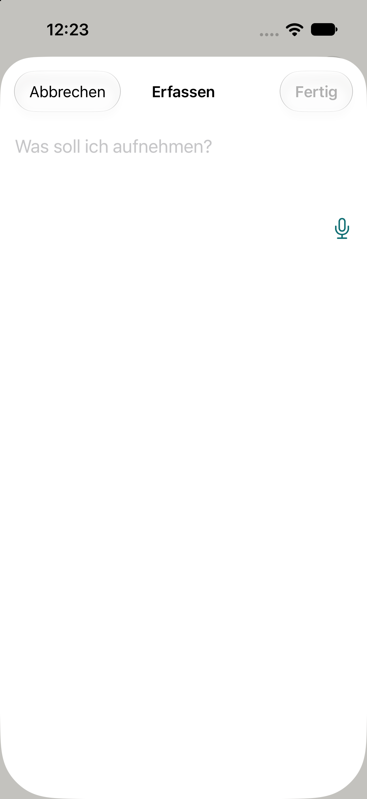

<title>Erfassung ohne Text</title>
<style>
/* Layout: drei Telefonrahmen nebeneinander (Heute, Entwurf A, Entwurf B), darunter je eine Zeile Erklärung. */
:root {
  --page: #ECE9E2;
  --ink: #1D1F1E;
  --ink-2: #5E625F;
  --line: #CFCBC1;
  --sheet: #FFFFFF;        /* Erfassungsblatt hell (System) */
  --pill: #F2F2F2;
  --accent: #0F6E73;       /* App: AccentColor hell */
  --field: #FFFFFF;
  --warn: #B3261E;         /* Rot = Zeitdruck; hier bewusst NICHT benutzt */
  --note: #5E625F;
  --font-ui: "IBM Plex Sans", -apple-system, "Helvetica Neue", Arial, sans-serif;
  --font-mono: "IBM Plex Mono", ui-monospace, Menlo, monospace;
}
@media (prefers-color-scheme: dark) {
  :root:not([data-theme="light"]) {
    --page: #0E0F0F; --ink: #ECEDEB; --ink-2: #A3A7A4; --line: #2E3130;
    --sheet: #1C1C1E; --pill: #2C2C2E; --accent: #5FC4C9; --field: #212321; --note: #A3A7A4;
    color-scheme: dark;
  }
}
:root[data-theme="dark"] {
  --page: #0E0F0F; --ink: #ECEDEB; --ink-2: #A3A7A4; --line: #2E3130;
  --sheet: #1C1C1E; --pill: #2C2C2E; --accent: #5FC4C9; --field: #212321; --note: #A3A7A4;
  color-scheme: dark;
}
body { background: var(--page); color: var(--ink); font-family: var(--font-ui); font-size: 15px; line-height: 1.5; padding-inline: 16px; padding-block: 24px 48px; }
main { max-width: 1040px; margin-inline: auto; }
h1 { font-size: 1.5rem; margin: 0 0 4px; text-wrap: balance; }
.lead { color: var(--ink-2); margin: 0 0 24px; max-width: 62ch; }
.row { display: grid; grid-template-columns: repeat(3, minmax(0, 1fr)); gap: 24px; align-items: start; }
@media (max-width: 860px) { .row { grid-template-columns: minmax(0, 1fr); } }
figure { margin: 0; min-width: 0; }
figcaption { margin-top: 12px; }
figcaption b { display: block; font-size: 0.8rem; letter-spacing: 0.06em; text-transform: uppercase; color: var(--ink-2); margin-bottom: 4px; }
figcaption span { color: var(--ink); }
.phone { background: var(--sheet); border: 1px solid var(--line); border-radius: 28px; padding: 14px 16px 20px; min-height: 380px; display: flex; flex-direction: column; gap: 14px; }
.bar { display: flex; justify-content: space-between; align-items: center; font-size: 0.95rem; }
.bar .t { font-weight: 600; }
.bar .a { background: var(--pill); border-radius: 999px; padding: 8px 14px; }
.bar .a.off { color: var(--ink-2); }
.field { padding: 6px 2px; min-height: 76px; font-size: 1.25rem; color: var(--ink-2); opacity: .7; }
.field.has { color: var(--ink); }
.listen { display: flex; align-items: center; gap: 12px; }
.wave { flex: 1; height: 32px; display: flex; align-items: center; gap: 3px; }
.wave i { display: block; width: 3px; background: var(--accent); border-radius: 1px; }
.mic { color: var(--accent); font-size: 1.4rem; line-height: 1; }
.hint { font-size: 0.8rem; color: var(--note); display: flex; align-items: center; gap: 8px; }
.hint .dot { width: 8px; height: 8px; border-radius: 50%; border: 1.5px solid var(--accent); flex: none; }
.hint .bt { margin-left: auto; color: var(--accent); }
.shot { width: 100%; max-height: 520px; object-fit: cover; object-position: top; border-radius: 28px; border: 1px solid var(--line); display: block; }
.sec { margin-top: 36px; }
.sec h2 { font-size: 1.05rem; margin: 0 0 8px; }
.sec ul { margin: 0; padding-left: 1.1em; max-width: 70ch; }
.sec li { margin-bottom: 6px; }
code { font-family: var(--font-mono); font-size: 0.88em; }
</style>
<link rel="stylesheet" href="https://fonts.googleapis.com/css2?family=IBM+Plex+Mono&family=IBM+Plex+Sans:wght@400;600&display=swap">
<main>
  <h1>Erfassung: Wenn Ton ankommt, aber kein Text</h1>
  <p class="lead">Heute zeigt die Erfassung eine Wellenform, auch wenn die Erkennung nichts liefert. Der Entwurf sagt dann in einer Zeile, was los ist. Farben sind die der App (Papier und Akzent), der Entwurf folgt dem Hell/Dunkel deines Geräts.</p>

  <div class="row">
    <figure>
      
      <figcaption><b>Heute (Simulator, echter Screenshot)</b><span>Der Simulator hat keine Sprachmodelle, deshalb steht hier der Ruhezustand. Auf dem Gerät läuft beim Zuhören die Wellenform links vom Mikrofon, das Feld bleibt leer, und nichts sagt, warum.</span></figcaption>
    </figure>

    <figure>
      <div class="phone" aria-label="Entwurf A">
        <div class="bar"><span class="a">Abbrechen</span><span class="t">Erfassen</span><span class="a off">Fertig</span></div>
        <div class="field">Was soll ich aufnehmen?</div>
        <div class="listen">
          <div class="wave" aria-hidden="true"><i style="height:6px"></i><i style="height:14px"></i><i style="height:22px"></i><i style="height:12px"></i><i style="height:26px"></i><i style="height:10px"></i><i style="height:18px"></i><i style="height:8px"></i><i style="height:24px"></i><i style="height:12px"></i><i style="height:6px"></i><i style="height:16px"></i><i style="height:20px"></i><i style="height:9px"></i><i style="height:14px"></i></div>
          <svg class="mic" width="22" height="22" viewBox="0 0 24 24" fill="currentColor" aria-hidden="true"><path d="M12 15a3.5 3.5 0 0 0 3.5-3.5V6a3.5 3.5 0 1 0-7 0v5.5A3.5 3.5 0 0 0 12 15Zm6-3.5a1 1 0 1 0-2 0 4 4 0 0 1-8 0 1 1 0 1 0-2 0 6 6 0 0 0 5 5.91V20H9a1 1 0 1 0 0 2h6a1 1 0 1 0 0-2h-2v-2.59A6 6 0 0 0 18 11.5Z"/></svg>
        </div>
        <div class="hint"><span class="dot"></span><span>Ich höre Ton, aber die Erkennung liefert noch nichts. Du kannst auch tippen.</span></div>
      </div>
      <figcaption><b>Entwurf A (empfohlen)</b><span>Nach 6 Sekunden Ton ohne Text erscheint eine graue Zeile unter der Wellenform. Sie verschwindet, sobald Text kommt. Keine Farbe, kein Alarm.</span></figcaption>
    </figure>

    <figure>
      <div class="phone" aria-label="Entwurf B">
        <div class="bar"><span class="a">Abbrechen</span><span class="t">Erfassen</span><span class="a off">Fertig</span></div>
        <div class="field">Was soll ich aufnehmen?</div>
        <div class="listen">
          <div class="wave" aria-hidden="true"><i style="height:6px"></i><i style="height:14px"></i><i style="height:22px"></i><i style="height:12px"></i><i style="height:26px"></i><i style="height:10px"></i><i style="height:18px"></i><i style="height:8px"></i><i style="height:24px"></i><i style="height:12px"></i><i style="height:6px"></i><i style="height:16px"></i><i style="height:20px"></i><i style="height:9px"></i><i style="height:14px"></i></div>
          <svg class="mic" width="22" height="22" viewBox="0 0 24 24" fill="currentColor" aria-hidden="true"><path d="M12 15a3.5 3.5 0 0 0 3.5-3.5V6a3.5 3.5 0 1 0-7 0v5.5A3.5 3.5 0 0 0 12 15Zm6-3.5a1 1 0 1 0-2 0 4 4 0 0 1-8 0 1 1 0 1 0-2 0 6 6 0 0 0 5 5.91V20H9a1 1 0 1 0 0 2h6a1 1 0 1 0 0-2h-2v-2.59A6 6 0 0 0 18 11.5Z"/></svg>
        </div>
        <div class="hint"><span class="dot"></span><span>Keine Erkennung seit 6 s.</span><span class="bt">Ablauf teilen</span></div>
      </div>
      <figcaption><b>Entwurf B</b><span>Wie A, mit einer Schaltfläche „Ablauf teilen“, die das Protokoll der Kette (Modell, Rechte, Ton, Ergebnisse) als Text weitergibt. Das hilft der Fehlersuche, ist aber ein zweites Bedienelement.</span></figcaption>
    </figure>
  </div>

  <section class="sec">
    <h2>Was sich hinter der Zeile ändert</h2>
    <ul>
      <li>Die Kette schreibt ihre Stationen zusätzlich in eine kleine Datei im App-Ordner (Modellstatus, Rechte, Audio-Eingang, Puffer, erstes Ergebnis, Fehler). Heute steht das nur im Systemprotokoll, das in TestFlight niemand lesen kann.</li>
      <li>In der Erfassung bleibt alles wie heute, solange Text kommt.</li>
      <li>Der Entwurf löst den Fehler nicht selbst. Er macht ihn in deiner echten App sichtbar, damit wir die Ursache lesen statt raten.</li>
    </ul>
  </section>
  <section class="sec">
    <h2>Alternative zu beiden</h2>
    <ul>
      <li>Keine Anzeige, nur die Datei. Dann liest sie jemand per Kabel aus dem App-Ordner; in TestFlight geht das nicht.</li>
      <li>Rückbau auf die alte Spracherkennung (kippt die Entscheidung „nur auf dem Gerät“ aus #64). Ohne Beleg ein Schuss ins Blaue.</li>
    </ul>
  </section>
</main>
